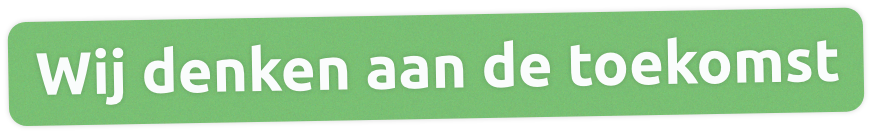

Wij zijn Rono IT. Wij maken jouw werk makkelijker. Dat is waar we blij van worden.
Wij zijn Rono IT. En wij geloven dat IT je werk makkelijker moet maken, niet moeilijker. Al 25 jaar helpen we bedrijven met oplossingen die gewoon werken. Vanuit Waalwijk denken we met je mee en bouwen we oplossingen waar jij écht op kunt vertrouwen. Zonder poespas.
Klimaat: minder stroom, meer rust
Je apparatuur draait dag en nacht. Maar dat betekent niet dat het altijd stroom moet slurpen. Wij kiezen voor slimme oplossingen die zuinig omgaan met energie. Denk aan virtualisatie, slimme stand-by-standen en energiezuinige apparatuur. Hoe minder je systemen hoeven te doen, hoe beter ze draaien. En hoe minder ze verbruiken. Jij wint tijd. Het klimaat wint ruimte.
Waarom we doen wat we doen
Omdat we geloven dat het anders kan. Te veel bedrijven zitten vast in systemen die ze niet snappen. Of ze moeten steeds wachten op IT'ers die alleen in jargon praten. Wij doen het anders. Wij maken IT begrijpelijk, toegankelijk en menselijk. Zodat jij door kunt met je eigen werk. Waarmee kunnen we jou helpen? Daag ons uit. We denken graag met je mee.
Techniek verandert snel. Maar het doel blijft hetzelfde: jij wil gewoon kunnen werken. Daarom bouwen wij IT-oplossingen die toekomstvast zijn: schaalbaar, stabiel en makkelijk te begrijpen. Of je nu groeit, verhuist of overstapt: wij denken vooruit. Zodat jij straks niet hoeft terug te komen op keuzes van vandaag. Wat vandaag werkt, moet morgen beter werken. Niet ingewikkelder.
Slimme IT. Zonder poespas. We helpen je met: systemen die met elkaar praten, software die jouw werk versnelt en beveiliging waar je op kunt bouwen. Maar bovenal: we zorgen dat IT voor jou werkt. Niet voor ‘een gemiddelde klant’, maar voor jou.
We houden niet van onnodige prints, overvolle postvakken en papieren chaos. Daarom helpen we je digitaal te werken: veilig, overzichtelijk en zonder gedoe. Van facturen tot werkinstructies: je deelt ze digitaal, wij zorgen voor de beveiliging. En als er toch iets op papier moet? Dan kiezen we leveranciers die duurzaam omgaan met grondstoffen en transport. Zo blijft jouw organisatie overzichtelijk én verantwoord.
IT is mensenwerk. Daarom beginnen we altijd met luisteren. Wat zijn jouw doelen? Wat zit er in de weg? Pas als we dat weten, kijken we naar de techniek. We schakelen snel, houden het overzicht en leggen alles uit in gewone taal.
IT is geen doel. Het is een middel om jouw werk makkelijker te maken. We verkopen geen producten, we leveren oplossingen. Bij Rono IT richten we systemen zó in dat ze aansluiten op jouw manier van werken. We koppelen, beveiligen, versnellen en versimpelen. Altijd met oog voor jou, je collega’s en je klanten. Ervaar het, beleeft het. Je wilt niet meer anders.
Waarom kies je voor Rono IT?
Hoi, Wij zijn Rono IT. Waarmee kunnen we je helpen?
Wij kunnen je helpen met IT die werkt. Met minder gedoe. En met meer oog voor morgen. Want wij denken ook aan de toekomst. Als we samen ons best hiervoor doen, bereiken we nóg meer.